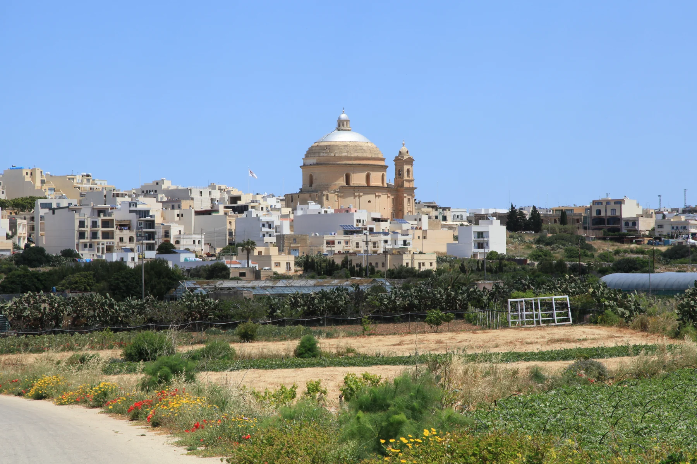

The parish church is a useful centre reference. Confirm the actual entrance, vehicle access, stairs, noise, light and nearby services at the property.
MĠARR · READ THE EXACT SETTING
Village core. Rural reach.
Mġarr gathers a compact centre around its parish church, the named Żebbiegħ edge and a much wider rural and coastal territory. Those contexts share a locality label, but they do not give a home the same outlook, access or everyday pattern.

ONE LOCALITY, DISTINCT CONTEXTS
The address decides which Mġarr you are viewing.
The Local Council describes a rural locality that reaches from the village to coastal places including Ġnejna, Għajn Tuffieħa and Fomm ir-Riħ. Treat that breadth as a reason to verify the street, not as permission to attach coast or countryside claims to every listing.
Żebbiegħ is a distinct address context within the wider locality and is associated with Skorba. Do not quietly relabel it as the central village.
Ġnejna, Għajn Tuffieħa and Fomm ir-Riħ belong to the broader locality story. Their presence does not establish a walk, view, parking option or current sea condition for a home.
Ta’ Ħaġrat and Skorba stay separate.
Heritage Malta places Ta’ Ħaġrat at Mġarr and Skorba on the outskirts in Żebbiegħ. Both belong to Malta’s UNESCO-listed megalithic temple group, but they are distinct sites with arrangements that must be checked directly.
Heritage Malta — Skorba ↗No bay becomes a proximity claim.
The council and VisitMalta connect Mġarr with coastal places including Ġnejna and Għajn Tuffieħa. The edition does not turn that relationship into a generic walking route, short transfer, parking promise, lifeguard claim or statement about today’s sea.
VisitMalta sea overview ↗OPERATOR-BACKED EXAMPLES
Everyday anchors without a “best of” list.
These examples add useful local texture. They are not a complete directory, recommendation or claim about live stock, menus, prices, opening hours or distance from a listing.
Maypole Żebbiegħ
Maypole’s own directory identifies an outlet on Sir Temi Zammit Street in Żebbiegħ, Mġarr. That operator record keeps the named edge distinct from the centre.
Operator source ↗United
United Bar & Restaurant describes itself as a family-run Maltese and Mediterranean restaurant behind the parish church. Current service details remain an operator check.
Operator source ↗Il-Barri
Il-Barri’s history page traces its development from a coffee shop and its association with traditional Maltese fenkata. This is an operator account, not a ranking.
Operator source ↗Verbena
Verbena describes a family-run local Mediterranean restaurant on the outskirts of Mġarr overlooking Żebbiegħ church. Confirm current access and service directly.
Operator source ↗Public-service details remain current checks.
Primary HealthCare’s current community-clinics page lists Mġarr Community Clinic at the Primary School on Fisher Street under locations providing speech and language services. Confirm the current timetable, available services and route before relying on it.
No overview line becomes a journey.
This edition draws no municipal boundary, straight-line shortcut, generic walking route, road ETA, bus schedule or coast connection. Walking geometry, bus timetables, current car-traffic estimates and taxi-price observations remain separate sources that require exact endpoints, mode and timestamp.
Load the village overview only when you need it.
The map centres on Mġarr village and the direction of Żebbiegħ. It deliberately does not pull the separate coast into a tight village crop or draw a boundary, property route or journey time. OpenStreetMap loads only after your click.
Mġarr Local Council · Council whereabouts · Primary HealthCare community clinics · Maypole Żebbiegħ · United · Il-Barri · Verbena · Ta’ Ħaġrat · Skorba · VisitMalta sea overview · Wikimedia Commons image record

No ranking, fixed opening hours, current coastal condition, property-specific route, guaranteed outlook, parking claim, accessibility promise, locality-wide walkability or journey time is claimed.